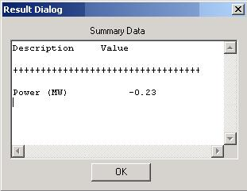

Water Pump Module
|
A water pump model has been added which calculates required power needed
to achieve the input pressure rise based on an input isentropic efficiency of
the pump. |
|
 Connections
Connections
Graphical User Interface (UI)
 The
User Interface first allows the user to input an Isentropic Efficiency
for the Water Pump (as fraction).
The
User Interface first allows the user to input an Isentropic Efficiency
for the Water Pump (as fraction).
When in evaluation mode the user must also specify a desired Pressure
Change (outlet pressure - inlet pressure). In design mode, the user
specifies the desired outlet pressure and the module
accordingly calculates the required pressure change.
Summary Data (SUM)
|
 |
The Summary screen displays the computed Power to coincide with specifications entered in the UI. Negative values represent the power required. |